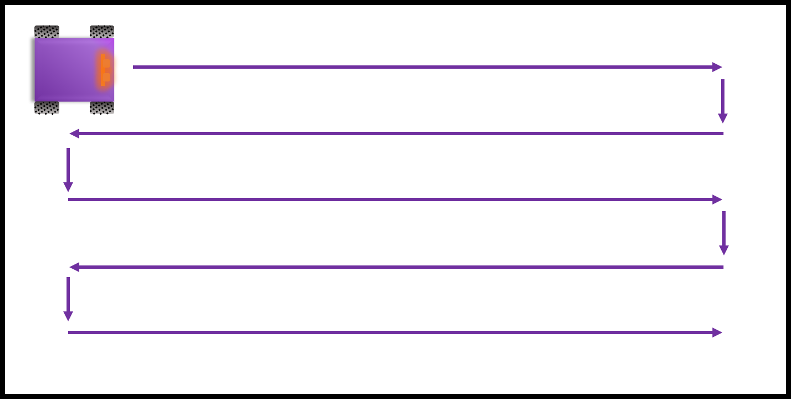
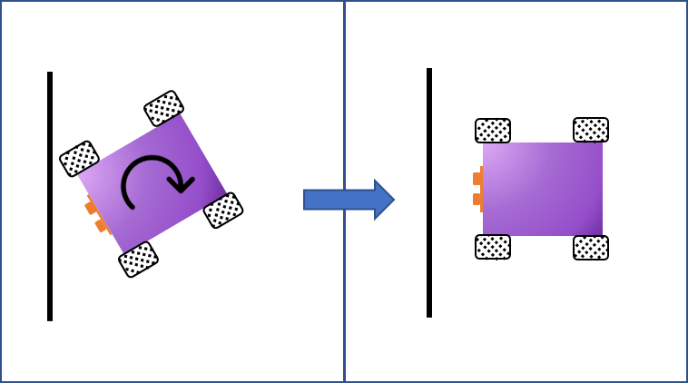
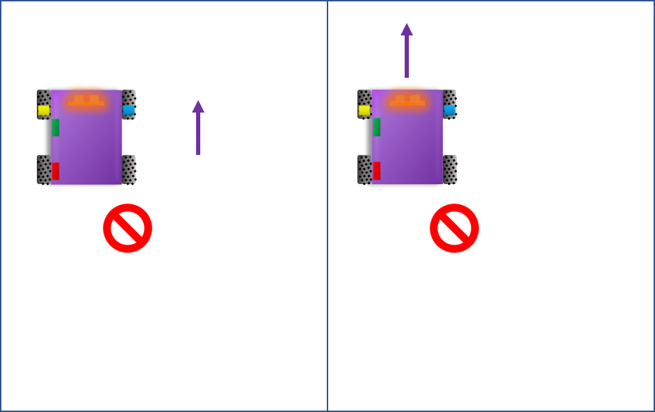

MECHENG 706
BE Mechatronics Engineering
Robot functionality can be divided into several subsystems - each responsible for a specific behaviour and task functionality.
For H.A.R.M to efficiently navigate the arena, he needs a starting position and this process helps him get there. Initialisation involves driving straight until a wall is encountered, turning 90° and continuing on until a corner is reached.A zigzagging pattern along the long side of the arena is desired and so H.A.R.M. rotates and times how long it takes to get to the second corner. From here, he can determine whether to start zigzagging or should drive to the third corner before starting his usual zigzagging pattern.
To ensure H.A.R.M drives straight, each wheel was initially roughly tuned for straight control. During run-time, a proportional controller then fine tunes these control inputs by taking gyroscopic measurements from the MPU to determine when it is drifting from the desired path.
To traverse the arena H.A.R.M. is programmed to find a wall, turn 90°, drive straight to avoid double area coverage and turn another 90° before continuing straight. To achieve zigzagging, the direction of rotation is changed after each wall encounter.
Whenever a wall is found, H.A.R.M uses his front outer sensors to align perpendicularly with the wall and as turning can also be rather tricky and introduce overshoot, the side sensors are used in a similar way to align parallel to the wall. This sets up H.A.R.M. nicely relative to the arena and ensures any directional error from the last path run does not affect the next.
When an obstacle is detected H.A.R.M strafes to the right and times how long it takes to horizontally clear the obstacle (with his front left sensor no indicating an object is no longer in front). He then proceeds to pass the obstacle on the right and waits for his back IR sensor to detect no obstacle. Finally H.A.R.M strafes back left for the same amount of time it took to strafe right.
When an obstacle is detected, H.A.R.M stops and uses his fire-fighting unit to scan the field in front of him. If a fire is detected, his fan is actuated so that it tracks and directly faces the flame. The fan is then activated and when the phototransistors indicate the fire has been successfully extinguished, obstacle avoidance commences.
When H.A.R.M first initialises himself into a corner, he sets this as his starting reference position. Everytime a wall or obstacle is encountered, localisation data and information about his whereabouts is stored in memory as an array. His position is output as a set of x and y-coordinates and is determined through dead reckoning which uses knowledge about his last position, speed and the elapsed time since the last update. Using his proximity sensors and phototransistors, H.A.R.M also determines if it is a wall or an obstacle he has approached and whether a fire is present. At the end of his run, H.A.R.M then hands this information over so it can be turned into a map and he can have a memento of his adventures.